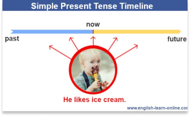
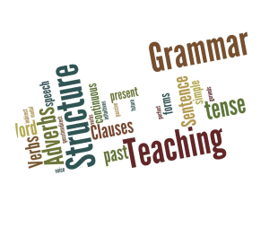
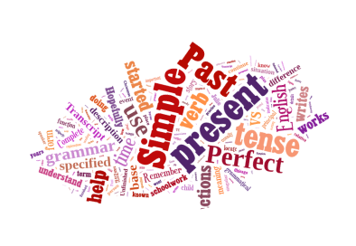
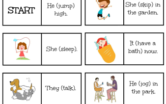
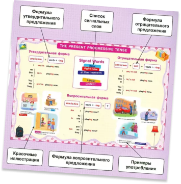
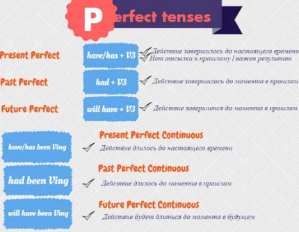

1. … elephant
2. … English dictionary
3. … butterfly
4. … German car
5. … Italian bag
6. … American college
7. … Russian city
8. … French designer
9. … Indian river
10. … egg
11. … notebook
12. … elegant lady
13. … ice-cream
14. … Japanese phone
I’d like … chicken sandwich and … glass of … mineral water. (Я бы хотел сэндвич с курицей и стакан минеральной воды.)
Would you like … banana or … strawberries? (Ты хочешь банан или клубнику?)
She always has … apple, … toast and … cup of … coffee for … breakfast. (Она всегда съедает яблоко, тост и пьет чашку кофе на завтрак.)
The fly is on … ceiling in … kitchen. (Муха – на потолке на кухне.)
My mother is … accountant and my father is … lawyer. They work in … same company in … centre of … our town. (Моя мама – бухгалтер, а папа – юрист. Они работают в одной компании в центре нашего города.)
How much are … her Italian lessons? – Ten dollars … hour. (Сколько стоят ее занятия по итальянскому языку? – Десять долларов в час.)
Where are … dogs? – They are in … garden. (Где собаки? – Они в саду.)
… cats like eating … fish. … cows like eating … grass. … birds like eating … insects. (Кошки любят есть рыбу. Коровы любят есть траву. Птицы любят есть насекомых.)
My favourite subjects are … chemistry and … biology. (Мои любимые предметы – химия и биология.)
There is … parrot in … cage. And there are … pieces of … fruit in it. (В клетке попугай. И в ней есть кусочки фруктов.)
My granny lives in … small village in … country. (Моя бабушка живет в маленькой деревушке в сельской местности.)
Your baby shouldn’t sit in … sun on … hot day. (Вашему малышу не следует сидеть на солнце в жаркий день.)
Please open … book. … exercise is on … page 68. (Пожалуйста, откройте книгу. Упражнение находится на странице 68.)
Ann has been looking for … job for … long time. (Аня ищет работу долгое время.)
What’s … matter? - I missed … 6 o’clock train. (Что случилось? – Я не успел на 6-часовой поезд.)
Do you like … vegetables? (Ты любишь овощи?)
… mother has got … terrible headache today. (У мамы сегодня ужасная головная боль.)
There were … tears in … her eyes. (В ее глазах были слезы.)
She is … very nice woman but her sons are … bad boys. (Она очень хорошая женщина, но ее сыновья – плохие парни.)
Look at … woman. She is … neighbor I told you about. (Посмотри на женщину. Это соседка, о которой я тебе говорил.)
He usually leaves work at 5 p.m.
We are enjoying the party.
Mary has just met my boss.
I’ve been writing this poem for a week.
They like watching TV quizzes.
That waiter has been speaking on the phone since 2 o’clock.
You have broken my notebook.
The train is going too slow.
I am playing billiards with my brother now.
Lara lives with her parents in Madrid.

your – ringing – is – telephone ?
come – where – from – you – do ?
languages – Nick – does – any – speak – foreign ?
your – happened – what – to – has – car ?
been – grass - has – Bob – cutting – the ?
person – you – ever – have – a – seen – famous ?
do – much – sandals - cost – how – these ?
crying – you – why – are ?
the – anybody – has – noise – heard ?
pizza - been – you – cooking - long – this - how – have ?
To work
Vicky … in an Italian restaurant.
I … only for 3 days this week.
The radio … now.
We … in the garden since morning.
to cook
I … roast chicken for 2 hours.
Mum … lunch at the moment.
He already … seafood pasta.
We … Japanese food at weekends.
to read
Bob … this book since last year.
I usually … detective stories.
Dad … all the newspapers today.
She … a fairy-tale to her son now.

I never eat mushrooms. (now)
Mrs. Sanders is closing her shop now. (already)
He smokes every half an hour. (since 2005)
Every summer we visit our relatives in France. (twice this year)
Tom has been wearing glasses for 2 years. (every day at school)
We have just built a sand castle on the beach. (now)

I (to work) now
He (eat) an apple
Natalia (write) a letter
Anna (to have) breakfast
They (to go) at work
They (listen) to music
She (sit) on a sofa
Tom (to play) football
Cats (to drink) milk
She (to read) a book

I am ___ now (run)
She is ___ (cry)
Dog is___ (bark)
My wife is ___ the dinner (make)
He is ___ on the chair (sit)
They are___ (stay)
Tom is___ her (help)
She is ___ her parents (visit)
I am___ a newspaper (read)
I am___ a car (drive)
football / play / he
Irina / trousers / wear
rain / it
cook / we / breakfast
I / drink / coffee
The sun / shine
wash / I / my hair
wait / for a bus / he
cry / Anna
Marina / have / a shower

1. Around me people (to talk) Russian, Italian and
English.
2. Arnold (to talk) to some of the other guests on
the terrace when Hardy came.
3. Alex (to look) at his watch.
4. All night long the stars (to glitter).
5. Elizabeth (to eat) and didn’t raise her head.
6. He drank some of the wine and ate several chunks of bread while he (to wait) for his dinner to come up.
7. The family (to prepare) for the party.
8. She (to argue) that only Belinda knew how to treat men.
9. A few minutes later Edward (to hurry) through the streets to his bus stop.
10. They moved across the room, which (to start) to fill up, to a vacant corner.
#1
1. ---- (you / see) the news? You won't believe your eyes.
2. I ---- (work) for big companies like this before. I know how they operate.
3-4. They ---- (live) in New York for 3 years before they ---- (move) to Seattle three months ago.
5. Debi ---- (study) for four hours when her father arrives.
6-7. By this time next year, I ---- (finish) the course and I ---- (start) to speak perfect English.
8-9. Sam ---- (drive) for six hours when he arrived in the village. He ---- (drive) more than 300 miles.
10. They ---- (work) for two hours by the time the manager arrives at six today.
11. By the time you received this letter yesterday, Dina ---- (leave) for Algeria.
12. When we meet again next week, I ---- (practice) tennis for at least a month .
13. She ---- (recover) from her surgery by the time we visit her next Saturday

#2
1. They
London this month. (leave)
2. He
a lot of English papers. (bring)
3. She
me about it. (tell)
4. I
a long letter from father this
week. (get)
5. She (just)
she will speak
to you in a minute. (come)
6. I
to Radio City. (be)
7. I think the director
the town. (leave)
8. I
my office. (paint)
9. We
her since she arrived to our city. (know)
10. I
your name. (forget)
11. He
the door. (close)
12. He
it since we left him. (do)
13. I
him my last penny. (give)
14. This order
to many misunderstandings. (lead)
15. He
his name on my book. (write)
16. She
a new umbrella. (buy)
17. He
my exercise over and over. (look)
18. I
those books very cheaply. (buy)
19. He
for two months. (work)
20. She
a new job. (find)
21. He
very well. (speak)
22. The children
the whole pudding. (eat)
23. You
many detective stories. (read)
24. Our team
the first prize. (win)
25. My little daughter
her finger with a knife. (cut)